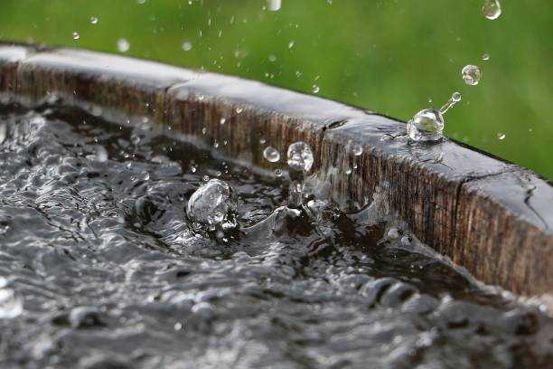
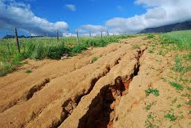
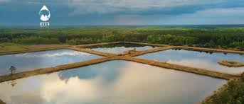
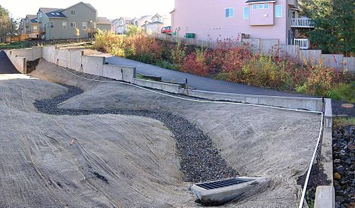

Rainwater harvesting is an effective way to conserve water by catching and storing rain for various uses, reducing thirst on groundwater supplies and defusing water scarcity.Rainwater harvesting saves water by collecting and storing rainwater for later use, which can reduce reliance on municipal water supplies and help with water scarcity. It involves using a catchment area, like a rooftop, to gather rain that is then channeled to a storage system, or used to recharge groundwater. This harvested water can be used for non-potable purposes like irrigation, flushing toilets, or washing clothes and cars.Rainwater harvesting saves water and lives by collecting and storing rain, reducing reliance on groundwater, and mitigating the risks of flooding and drought. By capturing rainwater, we create a local, sustainable water source for needs like irrigation and drinking (after purification), which supports life by ensuring water availability during dry periods and reducing the strain on depleted water supplies. It also prevents storm water runoff, which helps reduce flooding, soil erosion, and water pollution.
Flood Control
Capture rainwater runoff to reduce flooding risks in urban and rural areas, protecting soil, infrastructure, and people.Rainwater harvesting helps control floods by capturing and storing rainwater, which reduces the volume of surface runoff that can overwhelm drainage systems. Techniques include storing water in tanks, using "smart tanks" that release water ahead of storms based on forecasts, and implementing green infrastructure like check dams and bioswales to slow water flow and promote infiltration. These methods prevent or reduce flooding, minimize damage to property and infrastructure, and can also provide a water resource. Rainwater harvesting systems: Storing water from rooftops in underground tanks with controlled release valves to manage peak flows.
Smart tanks: Using rainfall forecasts to proactively empty tanks before heavy rain, allowing them to capture more water and reduce flood risk.
Check dams: Small barriers built across streams or gullies to slow down the flow of water and allow it to seep into the ground.
Bioswales and filter trenches: Vegetated channels that collect and filter stormwater, slowing its flow and improving its absorption into the soil.
Percolation tanks: Ponds or depressions that collect and hold large volumes of water, allowing it to gradually seep into the ground.
Floodwater harvesting: Diverting floodwaters from a larger catchment area, such as a mountainous area, into bunded basins for storage and soil enrichment.
Recharge Groundwater
Using rainwater harvesting to increase groundwater levels enables sustainable water availability for irrigation and domestic needs.Rainwater harvesting is a method for groundwater recharge that collects and directs rainwater into the ground to replenish aquifers. This process, also called artificial recharge, can be done using structures like recharge pits, trenches, and wells to capture runoff from roofs and other surfaces, allowing it to slowly filter into the soil. This helps to mitigate flooding, reduce water scarcity, and improve the longevity of existing wells. Groundwater can be recharged through natural processes like rain and infiltration, or through artificial methods like building percolation tanks, check dams, and recharge wells. A key method is using a recharge well, where rainwater collected from roofs is filtered and directed deep into the ground to replenish aquifers.
Energy & Cost Savings

Reducing reliance on pumped mains water helps save energy and cuts costs, supporting environmentally-friendly living.Improves groundwater table thereby saving energy to lift water: Rainwater harvesting systems recharge run-off surface water to the underground aquifer to increase the water level and its quality. This has resulted in creating a sustainable groundwater table even when there is less rainfall.Rainwater harvesting saves energy and costs by reducing reliance on treated municipal water, which requires significant energy for pumping and treatment. This leads to lower water and energy bills, especially in areas with high water rates, and can result in substantial savings of 40% to 50% on water bills. While initial setup costs exist, these are offset by long-term savings and the potential for government incentives.
Prevent Soil Erosion

Maintaining moisture levels and managing runoff keeps soil fertile and productive, reducing erosion issues.To prevent soil erosion in rainwater harvesting, use techniques like planting vegetative cover, contour farming, and building structures such as check dams and bunds. These methods slow down runoff, reduce the water's erosive power, and allow more water to infiltrate the soil.To avoid soil erosion and save water, if the majority of the rain falls in one or two spells in arid regions, the majority of the rain is never saved for later use and is instead wasted. In addition to having little rain, dry areas also experience "natural leakage," in which 90% of the rain is lost either directly or indirectly and is not available for domestic or agricultural use. Many countries are on the verge of a historic water shortage. Rain Water Harvesting (RWH) entails using techniques that enhance the quantity of water stored in the soil profile by capturing or retaining the rain where it falls. It also involves capturing small amounts of precipitation as surface runoff.
Improve Ecosystems

Enhance biodiversity and landscape health with cleaner water sources and steady moisture availability.To improve ecosystems with rainwater harvesting, incorporate it with sustainable landscaping practices like rain gardens and permeable paving to reduce runoff and recharge groundwater. Implementing groundwater recharge systems such as infiltration pits, trenches, or percolation tanks directly benefits soil and local aquifers. Additionally, using harvested water for irrigation reduces the need for potable water and supports healthy plant life, while proper system maintenance prevents issues like mosquito breeding and ensures water quality. Create shallow depressions planted with native vegetation to capture and filter runoff, reducing erosion and increasing groundwater infiltration.
Improve Water Quality

Appropriate system design combined with filtration ensures high-quality rainwater suitable for many uses.To improve rainwater harvesting water quality, implement a multi-step approach including pre-tank filtration with first flush diverters and leaf guards, regular maintenance like cleaning gutters, and post-tank treatment like activated carbon filters, UV sterilization, or chlorination. The specific methods depend on the intended use of the water, with drinking water requiring more thorough treatment and testing. Rainwater harvesting helps manage storm water runoff to prevent erosion, flooding, and poor water quality in our lakes and streams. ... Rainwater systems counteract storm water run off and thereby reduce flooding, erosion, and ground water contamination.